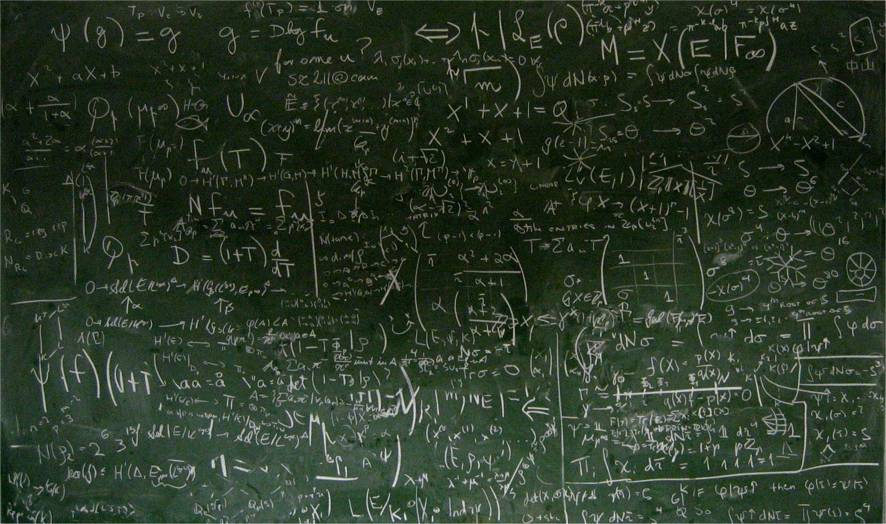

Méthodes et Modélisation
Cette partie est le coeur de notre projet. L’objectif est, à l’aide d’équations et d’outils d’analyse mathématique tel que le logiciel R, de déterminer la cadence minimisant la fatigue lors de la pratique du vélo.
Hypothèses
- Coureur assis sur sa selle.
- Température fixe. Puissance fixe. Terrain fixe.
- Cadence constante au cours de chaque expérience, mais différente d’une expérience à une autre.
Définition des termes
Avant de commencer, voici un tableau qui définie quelques termes essentiels pour bien comprendre la suite :| Terme | Abréviation | Unité | Définition |
| Puissance | P | Watt (W = J/s) | Niveau de l’effort fourni pour vaincre les résistances qui s’opposent au cycliste (pesanteur, frottements). |
| Cadence | C | Rotations par minute (rpm) | Vitesse à laquelle le cycliste tourne les jambes. |
| Fréquence cardiaque | H | Battements par minute (bpm) | Hmin : valeur au repos; Hmax : valeur maximale. |
Equations dont nous disposons
Nous avons dans un premier temps trouver une équation nous permettant de relier à la fois la puissance, la cadence et la fréquence cardiaque :
Première approche - La puissance constante
Avant de commencer toute modélisation, nous avons dû procéder à un travail de recherches bibliographiques important. Quelques équations ont été trouvées, mais aucune ne permettait de relier tous nos paramètres. Il a donc fallu mettre en lien plusieurs de ces équations.
Nous avons choisi de prendre comme fonction de fatigue la concentration de lactate au cours du temps. En effet, à partir de nos recherches, la quantité de lactate est directement proportionnelle à la concentration des protons. Ainsi, le but était de tracer l’évolution de la concentration de lactate dans le muscle au cours du temps, et ce pour différentes valeurs de cadence. A partir de cela, l'idée était de déterminer la meilleure cadence, que nous avons défini comme la cadence qui retarde au maximum l’augmentation de lactate. Nous nous sommes ici confrontés à un problème multi-échelle, où pour pouvoir relier nos équations il fallait tout d’abord regarder ce qui évolue le plus vite, pour pouvoir ensuite simplifier notre modèle en approximant certaines variables par leur état d’équilibre.
Difficultés rencontrées
- Nous avons été confronté à divers problèmes lors du travail sur le modèle, qui nous ont chacun poussé à revoir notre approche :
- Dans l’ensemble, tous nos paramètres variaient dans le temps à une vitesse comparable, on ne pouvait donc pas simplifier une de nos variables par son état d’équilibre.
- Nous nous sommes rendus compte qu'à partir du moment où la demande en dioxygène est supérieure au volume de dioxygène absorbé, le lactate évoluait toujours de la même façon dans le muscle. Autrement dit, tous les individus se fatiguent aussi vite après avoir atteint ce seuil, qui correspond à environ 70% de la VO2 max (capacité maximale d’absorption de dioxygène d’un individu). Ainsi, on cherchait à ce moment à déterminer la cadence où le temps mis pour dépasser ce seuil (D(O2)>70%VO2max) est le plus grand.
Cependant, l’équation (2) est difficilement exploitable : en effet, elle est non autonome donc on ne sait pas la résoudre. - Une des idées pour palier à ce problème est de se concentrer sur la recherche de la cadence qui minimise la fréquence cardiaque. Ainsi, on minimise le coût énergétique demandé au coureur.
On trace à partir de l’équation (1) la fréquence cardiaque en fonction de la cadence, pour différentes valeurs de puissance.
On remarque que 80 rpm est la cadence qui minimise la fréquence cardiaque quelque soit la puissance.D’après ces résultats, c’est donc à 80 rpm que le coût énergétique que doit fournir le coureur est le plus faible.
Première approche - La puissance constante
La première approche à puissance constante ne nous ayant pas donné entière satisfaction, nous prenons cette fois-ci une puissance non constante. Notre démarche ici est dans un premier temps de créer une fonction “puissance” pour ensuite pouvoir la passer en paramètre de la fonction de lactate. Le principe de notre fonction puissance est d’associer à chaque cadence une valeur de puissance en utilisant l’équation (1).
Pour modéliser le taux de lactate dans le sang, on exploite l’équation mathématique qui nous donne la concentration du lactate pendant un effort.
Cette concentration dépend du facteur lambda qui traduit l’état physique d’individu, de l’intensité d’exercice v et du temps et on remarque donc qu’il s’agit du produit de deux concentrations de lactate indépendante l’une à l’autre. La première partie de ce produit étudie la dépendance du niveau de lactate à l’intensité de l’exercice et elle s’exprime de manière suivante :
La seconde partie indique l’accumulation du lactate en fonction de temps :
Plusieurs paramètres entrent en jeu dans ces équations, il s’agit des :
On trouve dans la littérature une estimation de ces paramètres physiologiques. On prend alors les intervalles suivants :
Pour nous simplifier le travail, dans un premier temps, on va considérer lambda = 1, c’est-à-dire, le cas d’un athlète professionnel en bon santé.
Grâce aux équations on voit que le lactate admet une croissance exponentielle. On trace facilement l’évolution du lactate en fonction du temps, mais pour pouvoir tracer l’évolution de lactate en fonction de l’intensité, on a besoin de la fonction de puissance. Afin de récupérer cette fonction, on se redirige vers l’équation (1) qui lie la cadence, la puissance et la fréquence cardiaque. On calcule tout d’abord l’évolution de puissance pour une cadence en prenant en compte toutes les fréquences cardiaques, on calcule ensuite la moyenne pour cette cadence donnée. On répète avec toutes les cadences. Grâce à ce processus, on peut afficher l’évolution de la puissance en fonction de la cadence et la concentration du lactate.
On remarque donc d’après toutes nos modélisations que les cadences les plus faibles sont celles minimisant la fréquence cardiaque et donc par conséquent la demande en dioxygène. Ainsi, le coût énergétique demandé par ces faibles cadences est faible. Néanmoins, elles impliquent de fortes contraintes musculaires. Au contraire, les cadences élevées demandent elles un coût énergétique élevé, mais en contrepartie de faibles contraintes au sein des muscles. Tout l’enjeu est donc de trouver le meilleur compromis entre coût énergétique et contrainte musculaire.